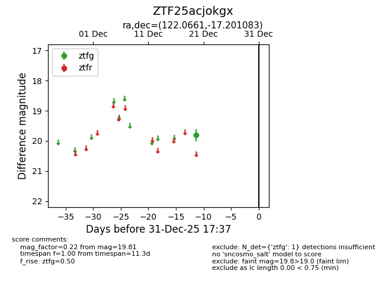
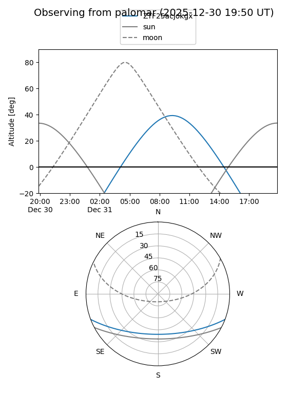

ZTF25acjokgx
Target ZTF25acjokgx at 2025-12-31 17:00
Aliases and brokers:
FINK:
Lasair:
ALeRCE:
alt names
ZTF25acjokgx (ztf,fink_ztf)
Coordinates:
equatorial (ra, dec) = 122.0661,-17.20108
equatorial (HMS+DMS) = 08:08:15.86,-17:12:03.90
galactic (l, b) = (237.1885,+8.32815)
Flags:
Photometry:
last ztfg=19.81
1 ztfg detections
Lightcurve

Visibility


Additional plots